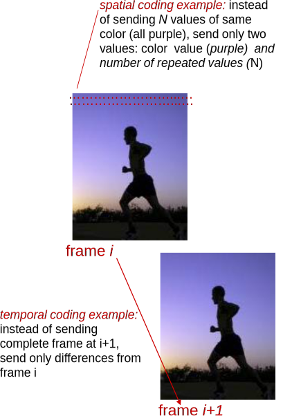
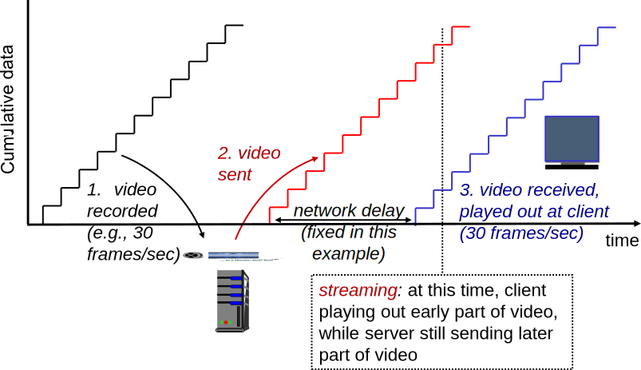
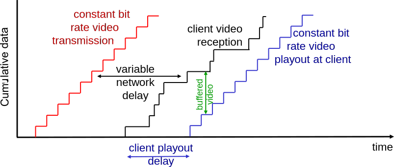
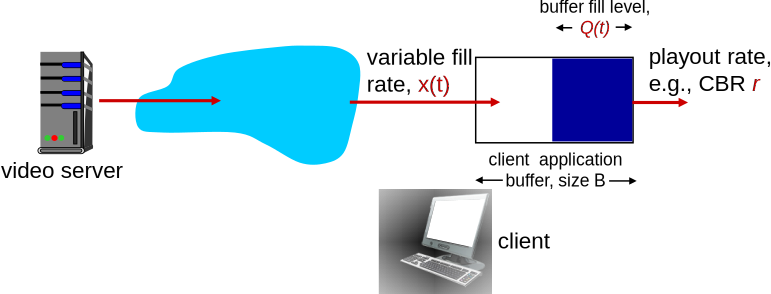
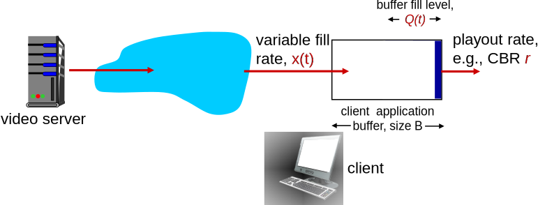
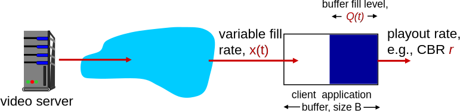
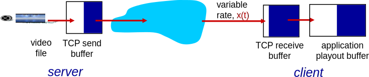

Receptor converte bits de volta ao sinal analógico.
Com, possivelmente, alguma perda de qualidade.
Exemplos de taxas:
CD: 1411 Mb/s.
MP3: 96, 128, 160 kb/s.
Telefonia via Internet: 5,3 kb/s ou mais.
Multimídia: Áudio (III)
Reduzir amostragem ou bits por amostra reduz tamanho do áudio.
Mas também reduz a qualidade.
Bits por Amostra
16
8
4
44100
8000
2000
Taxa de Amostragem (Amostras/s)
Multimídia: Vídeo (I)
Vídeo: sequência de imagens mostradas a taxa constante.
e.g., 24 imagens/s.
Imagem digital: matriz de pixels.
Cada pixel representado por bits.
Codificação: uso de redundância dentro e entre imagens para reduzir # de bits necessários.
Espacial (dentro de uma imagem).
Temporal (de uma imagem para outra).

Multimídia: Vídeo (II)
CBR (Constant Bit Rate): taxa de codificação do vídeo é constante.
VBR (Variable Bit Rate): taxa de codificação do vídeo muda à medida que redundância espacial/temporal muda.
Exemplos:
MPEG1 (CD-ROM): 1,5 Mb/s.
MPEG2 (DVD): 3 a 6 Mb/s.
MPEG4 (como comumente usado na Internet): < 1 Mb/s.
Multimídia: Três Tipos de Aplicação de Rede
Streaming de vídeo/áudio armazenado.
Streaming: conteúdo começa a ser reproduzido antes do download do arquivo todo.
Armazenado: conteúdo pode ser transmitido mais rapidamente que a renderização do áudio/vídeo.
Implica armazenamento/buffer no cliente.
e.g., YouTube, Netflix, Hulu.
Conversação de voz/vídeo sobre IP.
Natureza interativa da comunicação humana limita tolerância ao atraso.
e.g., Skype.
Streaming ao vivo de áudio/vídeo.
e.g., evento esportivo ao vivo.
Aplicações Multimídia e a Internet Atual
A Internet atual é adequada a estas aplicações?
Tema contraditório...
Por um lado, estas aplicações são realidade hoje.
Youtube, Netflix, Skype, streaming ao-vivo de eventos esportivos, ...
Por outro, sabemos que a Internet é uma rede de melhor esforço.
Atraso variável, congestionamento, perda de pacotes, ...
Três correntes de pensamento:
Aumentar capacidade da rede.
Implantar mecanismos auxiliares sem alterar funcionamento básico da rede.
Ou realizar mudanças arquiteturais profundas.
Streaming de vídeo armazenado
Streaming de Vídeo Armazenado

Streaming de Vídeo Armazenado: Desafios
Restrição de reprodução contínua:
Uma vez começada, reprodução no cliente deve seguir temporização original.
... mas atrasos de rede são variáveis (jitter).
É necessário um buffer no cliente para absorver as variações da rede.
Outros desafios:
Interatividade com o cliente: pausar, avançar, retroceder, pular para outras partes do vídeo.
Pacotes de vídeo podem ser perdidos, retransmitidos, duplicados.
Streaming de Vídeo Armazenado: Revisitando

Buffer do cliente e atraso na reprodução: compensam atrasos da rede e jitter.
Buffer do Cliente, Reprodução (I)

Buffer do Cliente, Reprodução (II)

Preenchimento inicial do buffer até que reprodução inicie em \(t_p\).
Reprodução começa em \(t_p\).
Ocupação do buffer varia no tempo, já que taxa de chegada x(t) varia, enquanto taxa de reprodução é constante.
Buffer do Cliente, Reprodução (III)

Buffer do cliente: taxa de chegada média x, taxa de reprodução r.
Se x < r, buffer eventualmente é esgotado, fazendo com que reprodução seja interrompida até que ele seja preenchido novamente.
Se x > r, buffer nunca será esgotado, desde que atraso inicial de reprodução seja grande o suficiente para absorver variabilidades em x(t).
Compromisso do atraso inicial de reprodução: quanto maior o atraso, menor a probabilidade de esgotamento do buffer, mas maior o tempo que usuário precisa esperar para começar a ver o conteúdo.
Streaming Multimídia: UDP
Servidor envia a taxa apropriada para o cliente.
Comumente: taxa de transmissão = taxa de codificação = taxa constante.
Taxa de transmissão é normalmente ortogonal aos níveis de congestionamento da rede.
Pequeno atraso inicial de reprodução usado para absorver jitter.
Recuperação de erros: no nível da aplicação, se há tempo para isso.
RTP [RFC 2326]: tipos de payload multimídia.
Firewalls podem filtrar pacotes UDP.
Streaming Multimídia: HTTP
Arquivo de mídia é requisitado através de uma requisição GET HTTP.
Enviado à taxa mais alta possível via TCP.

Taxa de chegada no cliente varia, devido ao controle de congestionamento e retransmissões do TCP (entrega em ordem).
Atraso de reprodução tipicamente maior: suaviza taxa de transmissão do TCP.
HTTP/TCP passa mais facilmente por firewalls.
Streaming Multimídia: DASH (I)
DASH:Dynamic, Adaptive Streaming over HTTP.
Servidor:
Divide vídeo em vários pedaços.
Cada pedaço armazenado e codificado em taxas diferentes.
Manifesto: arquivo que provê URLs para os diferentes pedaços.
Cliente:
Periodicamente mede banda até o servidor.
Consulta o manifesto, e requisita um pedaço por vez.
Escolhe maior taxa possível, dada a banda disponível.
Pode escolher taxas diferentes em momentos diferentes (dependendo da banda disponível no tempo).
Streaming Multimídia: DASH (II)
DASH:Dynamic, Adaptive Streaming over HTTP.
Inteligência no Cliente: cliente determina
Quando requisitar pedaço (de forma que esgotamento e overflow do buffer não ocorram).
Qual taxa de transmissão requisitar (aumentando a qualidade quando possível).
De onde requisitar um pedaço (pode escolher um servidor “próximo” ou com mais banda disponível).
Resumo da Aula (I)...
Tipos de conteúdo: áudio e vídeo.
Sequências de amostras.
Imagens estáticas ou sinal sonoro.
Amostras são quantizadas: mapeadas para valores discretos.
Taxa de amostragem: quantas amostras por intervalo de tempo.
Bits por amostra: quanto mais bits, maior a resolução da amostra.
Reduzir taxa de amostra ou bits por amostra reduz tamanho do conteúdo.
Mas também reduz qualidade.
e.g., introdução de ruído de quantização.
Compressão de dados: reduzir redundância.
Temporal ou espacial.
Pode levar a taxa variável.
Tipos de aplicação multimídia:
Streaming de conteúdo armazenado.
Reprodução começa antes do cliente obter todo o conteúdo.
Mas conteúdo completo já está pronto, armazenado no servidor.
Pode ser transmitido mais rapidamente que a taxa de reprodução.
Conversação de voz/vídeo.
Aplicação interativa, baixa tolerância a atraso.
Streaming de conteúdo ao vivo.
Resumo da Aula (II)...
Aplicações multimídia e a Internet: desafios.
Internet: rede de melhor esforço.
Perda de pacotes, atrasos variáveis (jitter).
Buffer de reprodução: absorve variações.
Cliente não começa reprodução imediatamente.
Aguarda período, bufferizando amostras.
Se buffer é grande o suficiente, variações não serão percebidas.
Por outro lado: buffermuito grande, grande atraso do início da reprodução.
Buffer e vazão: se taxa de chegada de dados é menor que a taxa de reprodução, buffer será esgotado.
Não importa seu tamanho, supondo que conteúdo seja longo.
UDP vs. TCP:
UDP: taxa constante, independente de congestionamento, pode ser filtrado.
TCP (HTTP): transmitido o mais rápido possível, firewall friendly.
DASH: taxa adaptativa, escolhida pelo cliente.
Leitura e Exercícios Sugeridos
Aplicações multimídia típicas:
Páginas 428 a 493 (até Subseção 7.2.2, inclusive).
Exercícios de fixação 1 e 2 do capítulo 7 do Kurose.
Problemas 1 (somente a e b), 2 e 3 do capítulo 7 do Kurose.
Lembretes
Próxima aula: prova (P2).
Aula seguinte: expira o prazo para entrega do segundo trabalho.